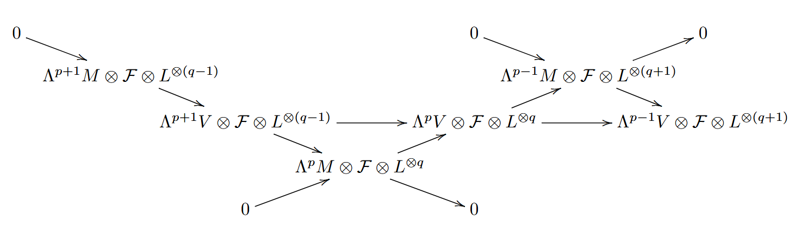

01/05/26: For a nef divisor \(D\) on a surface, we have \(D^2\geq 0\). The proof I found was from Miles Reid's book. It is based on the behaviour of the function \(p(t)=(D+tB)^2\) for rational and positive \(t\), and an ample line bundle \(B\). I also learned the other Cauchy-Schwartz version of the Hodge Index theorem: for an ample line bundle \(B\) and an arbitrary line bundle \(D)\ on a surface, we have \((B.D)^2\geq B^2D^2\).
01/04/26: Let \(S\) be a regular surface of general type with \(p_g\geq 4\). Let \(B\) be an ample and base point free line bundle such that \(H^1(B)=0\). If \(B^2\geq B.K_S\) and \( g(C)\geq K_S^2+4\) hold then \(H^1(M_L^{\otimes 2}\otimes {L'}^{\otimes k})=0\) for all \(k\geq 1\), where \(L=K_S\otimes B^{\otimes n},L'=K_S\otimes B^{\otimes l}\) for \(n,l\geq 2\).
01/03/26: Let \(X\) be a regular variety, \(E\) a vector bundle on \(X\), and \(C\) a divisor. Let \(L = \mathcal O_X(C)\) be globally generated, and assume \(H^{1}(E \otimes L^{*}) = 0\). If the map \(H^{1}(E \otimes \mathcal O_C)\otimes H^{1}(L \otimes \mathcal O_C) \to H^{1}(E \otimes L \otimes \mathcal O_C)\) is surjective, then the map \(H^{1}(E)\otimes H^{1}(L) \to H^{1}(E \otimes L)\) is also surjective.
12/30/25: Let \(S\) be a surface with non-negative Kodaira dimension and an ample, base point free line bundle \(B\) such that \(B^2\geq 5\). If \(B\equiv B'\) then \(K_S\otimes B'\) is ample and base point free. There are also certain conditioons which automatically gives \(B^2\geq 5\). Thus the assumption of \(K_S\otimes B\) being ample and base point free is an obvious one.
12/29/25: Let \(S\) be a surface of general type with an ample, base point free line bundle \(B\) such that \(B^2\geq B.K_S, \) and \(H^1(B)=0\). If \(B\otimes K_S\) is base point free and \(g(C)\geq K_S^2+4\) for some smooth irrudicible curve \(C\in |B|\). Then \(H^1(M_L\otimes E^{\otimes k})=0\) for all \(k\geq 1\) i.e., \(E\) is projectively normal,.
12/15/25: Let \(S\) be a surface of general type with an ample, base point free line bundle \(B\) such that \(B^2\geq B.K_S, B\not\equiv K_S, H^1(B)=0\) and \(B\otimes K_S\) is base point free. With some mild conditions on \(S\) we can conclude that \(H^1(M_L\otimes E^{\otimes k})=0\) for all \(k\geq 1\) i.e., \(E\) is projectively normal, where \(L=K_S\otimes B^{\otimes l},E=K_S\otimes B^{\otimes n}\).
12/14/25: For an ample divisor, \(B\) in a surface, \(S\) of general type with \(B^2\geq B.K_S\), we have \(h^0(K_S\otimes B)\geq h^0(K_S^{\otimes 2})\). This follows from Riemann-Roch and the fact that \(B^2\geq B.K_S\geq K_S^2\). The equality, \(h^0(K_S\otimes B)= h^0(K_S^{\otimes 2})\) holds if and only if \(B^2= B.K_S=K_S^2\).
12/13/25: For an ample divisor, \(B\) in a surface, \(S\) of general type we have \(H^0(B^*)=0=H^1(B^*)\). The first one is due to the fact that ample divisors have positive intersection with irreducible curves. The second one follows from Serre duality and Kodaira vanishing. Moreover \(H^0(K_S^*)=H^1(K_S^*)=0\) for surfaces of general type.
12/12/25: We learned the proof of the Hodge-Index theorem. Very briefly we discussed Castelnuovo's contraction theorem and how to find minimal surfaces.
12/08/25: I finally understood the proof that a degree zero line bundle in a curve can have sections iff it is the trivial line bundle.
12/05/25: Ruled surfaces are projective bundles \(\mathbb{P}(\mathcal{E})\) over \(\mathbb{P}^1\), where \(\mathcal{E}=\mathcal{O}_\mathbb{P}(a)\oplus \mathcal{O}_\mathbb{P}(b) \) and \(0\leq a\leq b\). The tautological line bundle forms a base point free linear system and is very ample if \(a>0\).
12/04/25: Ample line bundles in a surface are big and nef. Bigness comes from the fact that some power of an ample line bundle is very ample, giving an embedding. Also Nakai-Moishezon says a line bundle, \(L\) in a surface is very ample iff \(L^2>0\) and \(L.C>0\) for any irreducible curve \(C\).
12/01/25: For a minimal surface \(S\) of general type, if \(B\) is an ample and base point free line bundle with \(H^1(B)=0, B^2\geq B.K_S\) then \(H^1(B^{\otimes m})=0\) for all \(m\geq 1\).
11/17/25: I read about intersection theory on surfaces and looked at the proof from the paper 'Some Results on Surfaces of General Type': Let \(S\) be an algebraic surface of general type with an ample divisor \(B\) such that \(B\not\equiv K_S\), \(A^2=(B\otimes K^*_S)^2\geq 0\). If \(A^2=0\) then \[ K_S\cdot B+B^2\geq 2K_S^2+6.\]
11/16/17: I studied plurigenera, which is defined as \(P_m(X)=h^0(X,\omega_X^{\otimes m})\). If \(L\) is a line bundle on \(X\) with \(h^0(X,L^m)\neq 0\) for some \(m\) then the linear system \(|L^m|\) gives a rational map from \(X\) to a projective space. We define the Iitaka dimension to be the maximum of the dimensions of the closure of the image of \(X\) for all such \(m\). The Kodaira dimension is a particular case: when \(L\) is the canonical divisor of \(X\). These were defiend to classify surfaces, similar to classifying curves by genus.
11/14/25: We talked about Rational normal scrolls and discussed it's geometric picture from the book of Harris and Eisenbud.
11/10/25: I learned how to construct \(\mathbf{Proj}\) of sheaf of a graded algebra and the projective bundle. I read about the blow up of a scheme with respect to a sheaf of ideals or along a closed subscheme. Projective bundle shows how we can get a vector(projective) bundle of rank \(n\) over a scheme \(X\) if we have a locally free sheaf of rank \(n+1\) on \(X\).
11/05/25: If \(L\) is a line bundle of degree \(2g+p+1\) in a curve \(X\) of genus \(g\) and it defines an embedding into \(\mathbb{P}^{g+p+1}\) then \(L\) satisfies \((N_P)\). We used a nice result in this proof. For an exact sequnce \(0\to A\to B\to C\to 0\) of finite dimensional vector spaces, if \(A\) has rank 1 then using the canonical filtration on \(\wedge^p B\) we get the following exact seuqnce: \[ 0\to A \otimes \wedge^{p-1} C\to \wedge^p B \to \wedge^p C\to 0.\]
11/03/25: Let us denote \(D=\sum x_i\) for distinct points \(x_1,x_2,\cdots,x_n\) in \(X\). If \(L(-D)\) is base point free and \(h^1(L(-D))=h^1(L)\) for an ample, base point free line bundle \(L\) on a curve \(X\) then we have the following exact sequnce \[ 0\to M_{L(-D)}\to M_L\to \oplus O_X(-x_i)\to 0. \]
10/27/25: I finished the first three steps of the proof from Lazarsfeld's note that if \(L\) is a non-special line bundle in \(X\), then it satisfies \((N_p)\) if and only if \(H^1(X, \wedge^{p+1}M_L\otimes L^k)=0\) for all \(k\geq 1\). Here \(M_L\) is the kernel bundle. I also chased the following diagram: 
10/25/25: We learned about the cohomology of projective spaces and proved Riemann-Roch using Euler Characteristic.
10/20/25: The kernel bundle is the kernel of the evaluation map which can be obtained by taking the pullback of a twist of the Euler sequence. The kernel bundle for \( \mathcal{O}_{\mathbb{P}^1}(r) \) is \( r \) copies of \( \mathcal{O}_{\mathbb{P}^1}(-1) \).
10/17/25: I learned how we define a Cartier divisor if we have an invertible sheaf. We can associate a subscheme, \(Y\) of codimension 1 to an effective Cartier divisor \(D:\{(U_i,f_i)\}\), defined by the sheaf of ideals, \(\mathcal{I}_Y\) generated locally by \(f_i\)'s. In that case \(\mathcal{I}_Y=\mathcal{L}(-D)\). Also I learned that there are non-singular hypersurfaces of degree \(d\) in \(\mathbb{P}^n\) for large enough \(n\) and for all \(d\geq 1\).
10/16/25: I learned about Cartier divisors today. If X is a Noetherian, integral, locally factorial, separated scheme, then its class group and the Cartier class group are the same. Since X being integral also implies its Cartier class group and Picard group are the same, we have a complete understanding. I also learned about the class group of a projective space, and any divisor of degree \(d\) will come as a multiple of a hyperplane.